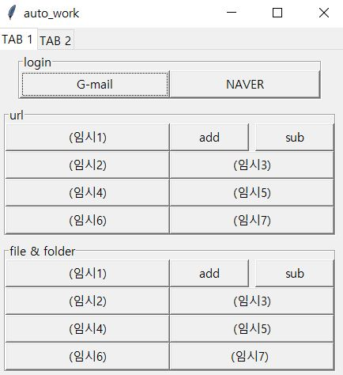

바로가기

tab 만들기
from tkinter.ttk import Notebook
tabControl = Notebook(win)
tab1 = Frame(tabControl)
tab2 = Frame(tabControl)
tabControl.add(tab1, text='TAB 1')
tabControl.add(tab2, text='TAB 2')
tabControl.pack(expand=1, fill="both")
Gmail_로그인
from selenium import webdriver
from selenium.webdriver.chrome.options import Options
from selenium.webdriver.chrome.service import Service
from webdriver_manager.chrome import ChromeDriverManager
import subprocess
import shutil
import pyperclip
import pyautogui as pag
import time
try:
shutil.rmtree(r"c:/chrometemp")
except FileNotFoundError:
pass
try:
subprocess.Popen(r'C:/Program Files/Google/Chrome/Application/chrome.exe \
--remote-debugging-port=9222 --user-data-dir="C:/chrometemp"')
except:
subprocess.Popen(r'C:/Program Files (x86)/Google/Chrome/Application/chrome.exe \
--remote-debugging-port=9222 --user-data-dir="C:/chrometemp"')
options = Options()
options.add_experimental_option("debuggerAddress", "127.0.0.1:9222")
service = Service(ChromeDriverManager().install())
driver = webdriver.Chrome(service=service, options=options)
driver.implicitly_wait(10)
driver.get(url) # url에 Gmail 링크 넣기 https://www.google.com/intl/ko/gmail/about/
driver.find_element_by_xpath('/html/body/header/div/div/div/a[2]').click()
id='' #''사이에 id 넣기
pw='' #''사이에 pw 넣기
time.sleep(0.5)
pag.write(id)
pag.press('tab', presses=3) # Press the Tab key 3 times
pag.press('enter')
time.sleep(3)
pag.write(pw)
pag.press('enter')
NAVER_로그인
from selenium import webdriver
from selenium.webdriver.chrome.options import Options
from selenium.webdriver.chrome.service import Service
from webdriver_manager.chrome import ChromeDriverManager
import shutil
import pyperclip
import pyautogui as pag
import time
try:
shutil.rmtree(r"c:/chrometemp")
except FileNotFoundError:
pass
options = Options()
service = Service(ChromeDriverManager().install())
driver = webdriver.Chrome(service=service, options=options)
driver.implicitly_wait(10)
driver.get(url) # url에 NAVER 링크 넣기 https://nid.naver.com/nidlogin.login?mode=form&url=https%3A%2F%2Fwww.naver.com
id='' #''사이에 id 넣기
pw='' #''사이에 pw 넣기
time.sleep(0.5)
driver.find_element_by_css_selector('#id_line').click()
pyperclip.copy(id)
pag.hotkey("ctrl","v")
driver.find_element_by_css_selector('#pw').click()
pyperclip.copy(pw)
pag.hotkey("ctrl","v")
driver.find_element_by_xpath('//*[@id="log.login"]').click()
파일 및 폴더 바로가기
import os
os.startfile(' ') #''사이에 파일 및 폴더 주소 넣기
add & sub 버튼
from openpyxl import load_workbook
wbf =' ' # 엑셀파일
wb = load_workbook(wbf) # 경로는 꼭 "/"로
sheet = wb['login_size_position']
url_1 = sheet1['b2'].value
url_n = sheet['b9'].value
def url_add():
bn=sheet['B9'].value
bn+=1
sheet['B9']=bn
wb.save(wbs)
bu_a1 = Button(url_master,text=sheet1['a'+str(3+2*(bn-1))].value,width=22\
,command=lambda i=(bn-1):[ta(sheet1['b'+str(3+2*i)].value),url_ct(sheet1['f'+str(3+2*i)])])
bu_a1.grid(column=0, row=bn+1, sticky='W')
list_of_button_url.append(bu_a1)
bu_a2 = Button(url_master,text=sheet1['a'+str(4+2*(bn-1))].value,width=22\
,command=lambda i=(bn-1):[ta(sheet1['b'+str(4+2*i)].value),url_ct(sheet1['f'+str(4+2*i)])])
bu_a2.grid(column=1, columnspan=2,row=bn+1, sticky='W')
list_of_button_url.append(bu_a2)
def url_sub():
bn=sheet['B9'].value
if bn>0:
bn-=1
sheet['B9']=bn
wb.save(wbs)
widget_url = list_of_button_url[-2:]
del list_of_button_url[-2:]
for wig_forget in widget_url: # 기존에 클릭을 하면 버튼하나씩 사라지게 만들어야 해서 리스트를 만들어 그것만 없애게 만듬
wig_forget.destroy()
# tkinter로 만든 최초 GUI
bn=url_n
list_of_button_url=[]
for i in range(bn):
bu_a1 = Button(url_master,text=sheet1['a'+str(3+2*i)].value,width=22\
,command=lambda i=i:[ta(sheet1['b'+str(3+2*i)].value),url_ct(sheet1['f'+str(3+2*i)])])
bu_a1.grid(column=0, row=i+1, sticky='W')
list_of_button_url.append(bu_a1)
bu_a2 = Button(url_master,text=sheet1['a'+str(4+2*i)].value,width=22\
,command=lambda i=i:[ta(sheet1['b'+str(4+2*i)].value),url_ct(sheet1['f'+str(4+2*i)])])
bu_a2.grid(column=1, columnspan=2,row=i+1, sticky='W')
list_of_button_url.append(bu_a2)
bu1 = Button(url_master,text=xl_name1,width=22,command=url_1).grid(column=0, row=0,sticky='W') # url_1은 별도로 함수로 만들어야 함
bu_add = Button(url_master,text="add",width=10,command=url_add).grid(column=1, row=0,sticky='w')
bu_sub = Button(url_master,text="sub",width=10,command=url_sub).grid(column=2, row=0,sticky='e')